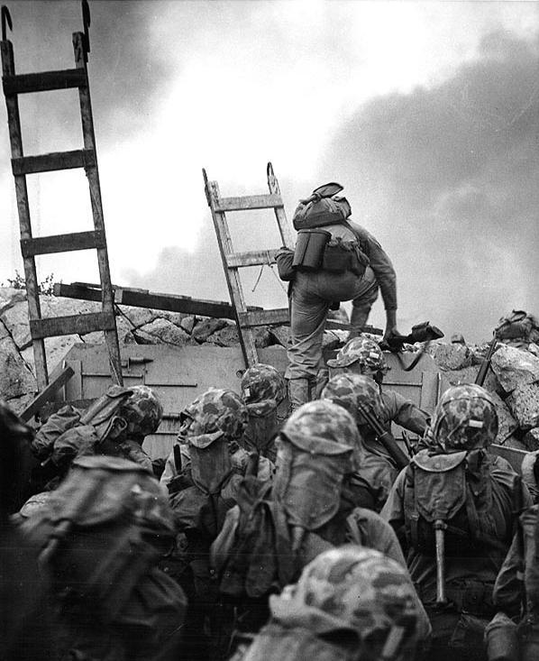
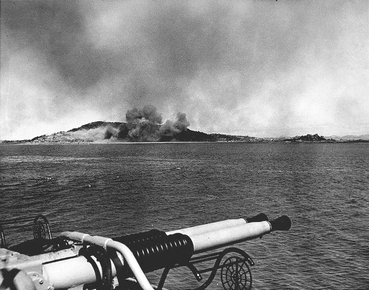

인천 동구 만석동 일대 방파제를 넘는 미 해병대 사진
- 날짜 : 1950년 9월 10일
- 교전 장소 : 경기도 인천시
- 교전국 :
- 연합군 : 대한민국, 미국, 영국, 캐나다, 프랑스
- 공산군 : 조선민주주의인민공화국
- 결과 : 연합군의 승리
배경
한국전쟁이 한창이던 1950년 9월 낙동강 방어선이 교착상태로 들어가자 UN군 총 사령관 더글라스 맥아더 장군은 낙동강 방어선을 넘어 반격을 하기위해
인천 상륙 작전을 계획합니다. 북한군 대부분의 전력은 부산을 한 시라도 점령하기 위해 낙동강 전선으로 투입되어 있었고 후방 병력은 제대로된 방어선을
구축하지 않은 상태였습니다.
이를 노린 맥아더 장군은 북한군의 보급로를 차단하기 위해 인천 지역으로 기습 상륙 작전을 감행할 것을 계획합니다.
전개

인천상륙작전 이틀 전 연합군 함선에 의해 포격당하고 있는 월미도
미군은 상륙작전을 개시하기 전 상륙지로 총 3개 지역 인천, 군산, 주문진으로 결정하였는데 최종적으로는 인천으로 상륙 작전을 감행할 것을 계획합니다.
하지만 미 합동참모부는 이를 반대 하였는데 그것은 바로 두가지 이유가 있었습니다.
- 수로가 협소해 대규모 함정 진입 불가 및 수로 기뢰로 인한 피해가 극심할 것으로 예상
- 밀물과 썰물 차이로 인해 상륙함 접근 불가
하지만 맥아더 장군은 참모부의 반대에도 불구하고 인천으로 상륙 작전을 진행할것을 명령합니다. 결국 미 합동참모부는 미 육군참모총장과
해군참모총장이 도쿄 미국 극동사령부로 와서 1950년 8월 23일 맥아더 장군과 회의를 개최합니다. 맥아더 장군이 인천을 상륙 지역으로 인천을
주목한 이유는 다음과 같습니다.
- 조선인민군의 전투부대는 모두 낙동강 방어선에서 미 8군과 정면으로 맞서고 있다.
- 병참선이 길게 늘어져 있어 후방인 서울에서 이를 차단할 수 있다. 그래서 서울과 가장 가까운 인천이 상륙 지역이 되어야 한다.
- 서울은 전략적, 정치적, 심리적 이유에서 신속히 탈환해야 한다.
- 인천은 미 8군이 망치가 되고, 미 10군이 모루가 되어 인민군을 분쇄하게 해줄 것이다.
결국 1950년 8월 28일 미국 합동참모본부는 맥아더 장군의 계획을 승인하고 9월 15일 상륙작전을 감행합니다. 상륙작전 당일 UN군은 양동작전을
개시 하는데 그것이 바로
장사 상륙 작전입니다.
인천 상륙 작전에 동원된 군함은 한국 15척, 미국 226척, 영국 12척, 캐나다 3척, 오스트레일리아 2척, 뉴질랜드 2척, 프랑스 1척으로 도합 261척의
대규모 함대가 구성 되었습니다. 상륙작전 이틀전 인천일대에 해군은 함포 공격을 쏟아 부었으며 상륙작전 당일인 15일 에드워드 알몬드 장군 지휘 아래
국군 백인엽 대령이 미군과 합동으로 작전을 수행하면서 UN군과 국군은 인천에 진입하게 됩니다. 북한군의 주력 병력들은 낙동강 전선에 밀집되어 있어
후방 병력들은 이에 비해 수가 적었으며 인천에 상륙한 UN연합군은 손쉽게 인천에 상륙할 수 밖에 없게됩니다.
결과
결국 인천 상륙 작전은 연합군의 승리로 끝나게 되고 김일성은 다급해집니다. 북한군은 급하게 병력을 소집하여 연합군을 막아내려 했지만 이미
연합군은 빠르게 서울로 진입을 시도 하였고 이는 서울 수복의 발판을 마련하게 되고 전쟁의 분위기를 완전히 뒤바꿔버리게 됩니다.
참고자료
[명작다큐] 모두가 의심했던 인천상륙작전. 전황을 완전히 뒤집은 맥아더. 세계 100대 다큐멘터리 선정 "한국전쟁 10부작" | 4부 북진 KBS 20100620 방송